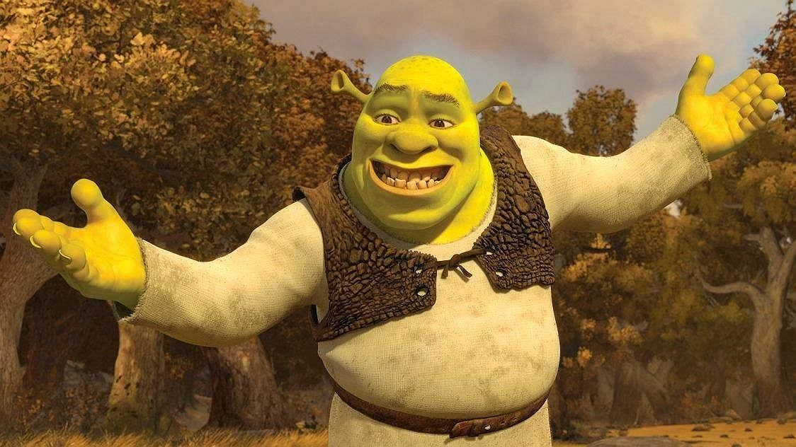
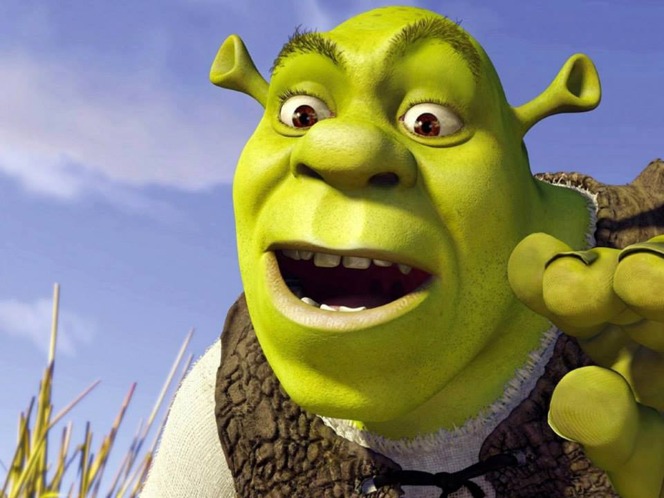
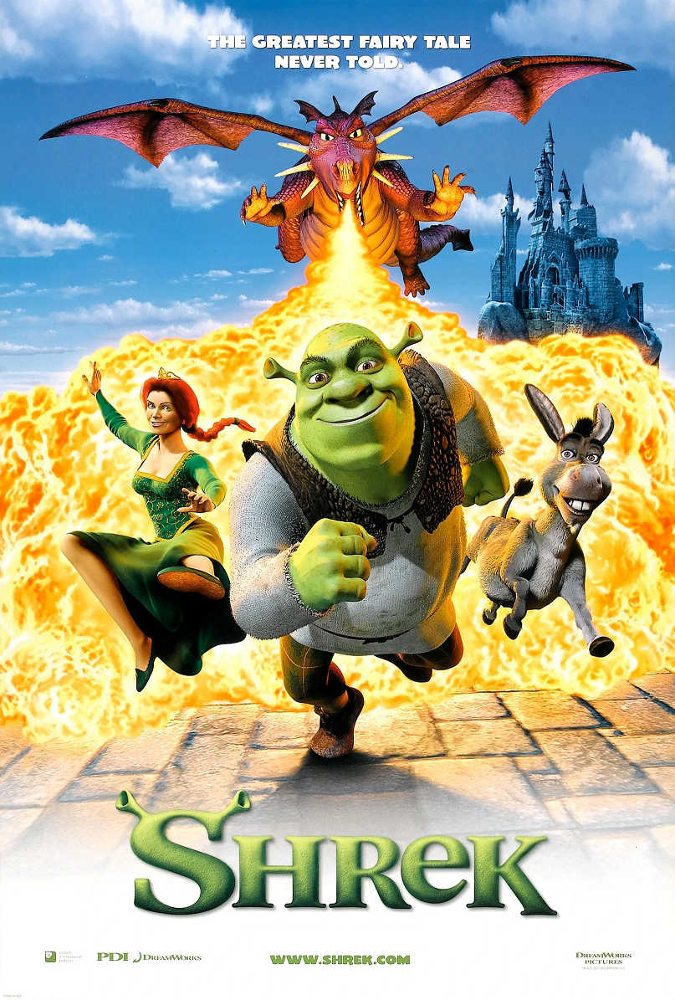
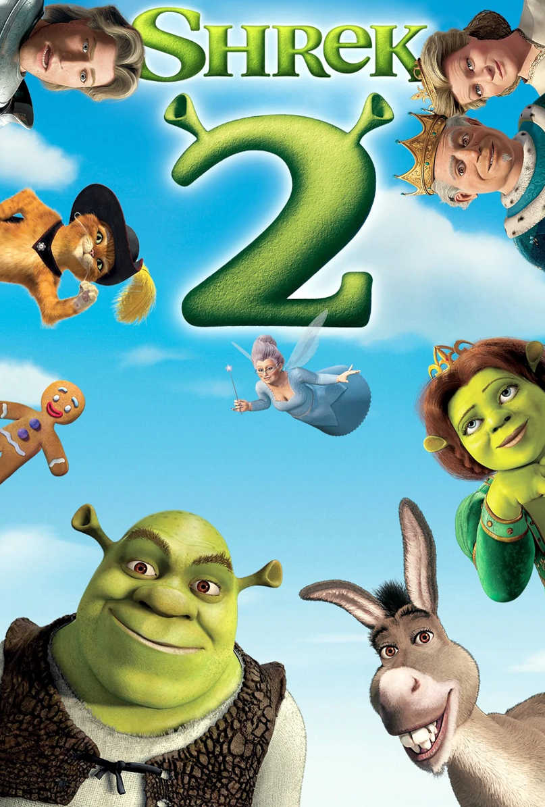
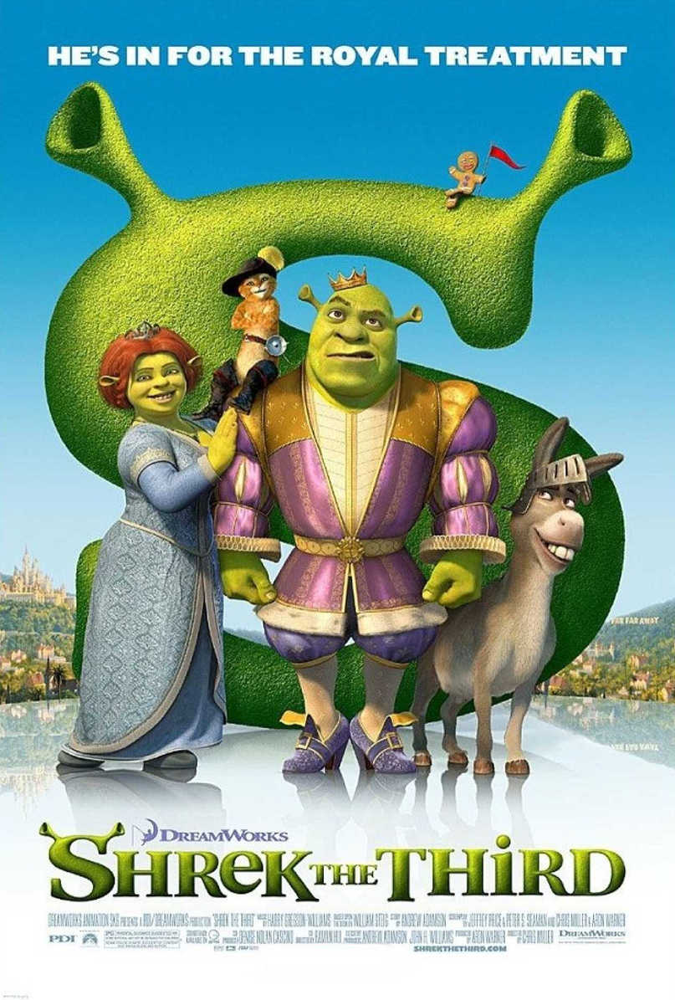

Shrek (film)
| będący adaptacją ilustrowanej książki Shrek! autorstwa Williama Steiga. Film został nagrodzony Nagrodą Akademii Filmowej w kategorii najlepszy film animowany pełnometrażowy na 74. ceremonii wręczenia Oscarów. Był to pierwszy Oscar w tej kategorii, gdyż nagrodę tę zaczęto przyznawać od 2002. Piosenki w filmie śpiewają: Smash Mouth, Joan Jett, The Proclaimers, Jason Wade, The Baha Men i Rufus Wainwright. Animacja doczekała się kilku kontynuacji: Shrek 2 w 2004, Shrek Trzeci w 2007 i Shrek Forever w 2010będący adaptacją ilustrowanej książki Shrek! autorstwa Williama Steiga. Film zoAnimacja doczekała się kilku kontynuacji: Shrek 2 w 2004, Shrek Trzeci w 2007 i Shrek Forever w 2010będący adaptacją ilustrowanej książki Shrek! autorstwa Williama Steiga. Film zosstał nagrodzony Nagrodą Akademii Filmowej w kategorii najlepszy film animowany pełnometrażowy na 74. ceremonii wręczenia Oscarów. Był to pierwszy Oscar w tej kategorii, gdyż nagrodę tę zaczęto przyznawać od 2002. Piosenki w filmie śpiewają: Smash Mouth, Joan Jett, The Proclaimers, Jason Wade, The Baha Men i Rufus Wainwright. Animacja doczekała się kilku kontynuacji: Shrek 2 w 2004, Shrek Trzeci w 2007 i Shrek Forever w 2010 |
Pierwszy paragrafbędący adaptacją ilustrowanej książki Shrek! autorstwa Williama Steiga. Film został nagrodzony Nagrodą Akademii Filmowej w kategorii najlepszy film animowany pełnometrażowy na 74. ceremonii wręczenia Oscarów. Był to pierwszy Oscar w tej kategorii, gdyż nagrodę tę zaczęto przyznawać od 2002. Piosenki w filmie śpiewają: Smash Mouth, Joan Jett, The Proclaimers, Jason Wade, The Baha Men i Rufus Wainwright. Animacja doczekała się kilku kontynuacji: Shrek 2 w 2004, Shrek Trzeci w 2007 i Shrek Forever w 2010 |
Drugi paragrafbędący adaptacją ilustrowanej książki Shrek! autorstwa Williama Steiga. Film został nagrodzony Nagrodą Akademii Filmowej w kategorii najlepszy film animowany pełnometrażowy na 74. ceremonii wręczenia Oscarów. Był to pierwszy Oscar w tej kategorii, gdyż nagrodę tę zaczęto przyznawać od 2002. Piosenki w filmie śpiewają: Smash Mouth, Joan Jett, The Proclaimers, Jason Wade, The Baha Men i Rufus Wainwright. Animacja doczekała się kilku kontynuacji: Shrek 2 w 2004, Shrek Trzeci w 2007 i Shrek Forever w 2010 |
|  |  |
|  |  |  |